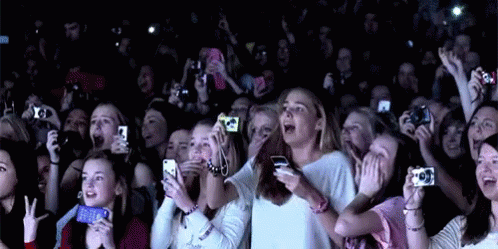

Achievements
Awards
 Logan Paul
has been nominated and won many mainstream awards that many personalities dream of winning.
He was nominated for many awards that include numerous Steamy nominations from 2014-present.
Also, winning the 2017 Teen Choice Awards
for the best Male Web Star and Best Comedian Web Star. In addition, his first single, Help
Me Help You featuring Why Don't We, was on the Billboard Top 100 in his first week.
Moreover, he was also featured on the cover of Adweek Magazine and was the first person
to create an underwater Facebook live video.
Logan Paul
has been nominated and won many mainstream awards that many personalities dream of winning.
He was nominated for many awards that include numerous Steamy nominations from 2014-present.
Also, winning the 2017 Teen Choice Awards
for the best Male Web Star and Best Comedian Web Star. In addition, his first single, Help
Me Help You featuring Why Don't We, was on the Billboard Top 100 in his first week.
Moreover, he was also featured on the cover of Adweek Magazine and was the first person
to create an underwater Facebook live video.
Fans
Logan Paul has massed over millions of fans all over the world and gained millions of follows on his social media. This can lead to huge endorsement deals, which in return generates a vast amount of money. For example, the massive company, Pepsi partnered with Logan Paul to advertise a product. Moreover, he has over 16 million follows on Instagram, over 10 million on Vine and over 5 million on Twitter. These numbers are very impressive and only the elite celebrities have this type of magnitude of fans.
This list below is his top 5 most viewed videos
- FULL SONG: The Fall Of Jake Paul (Official Video) FEAT. Why Don't We
- The Fall Of Jake Paul Feat. Why Don't We (Official Video) #TheSecondVerse
- The Rise Of The Pauls (Official Music Video) feat. Jake Paul #TheSecondVerse
- So Sorry.
- Logan Paul - SANTA DISS TRACK (Official Music Video)